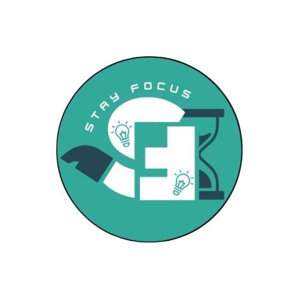

Stacus: Stay Focused!
Kelola waktu Anda dengan efisien, catat rencana belajar, dan pantau kemajuan Anda.
Timer
00:00
Calendar
Fitur kalender untuk merencanakan kegiatan Anda.
Kelola waktu Anda dengan efisien, catat rencana belajar, dan pantau kemajuan Anda.
00:00
Fitur kalender untuk merencanakan kegiatan Anda.